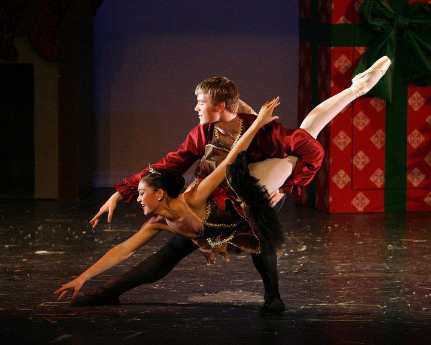

Opening pose for an acrobatic dance
The Secret

Adagio swan
The Lesson
Pausing in a handstand before handwalking across the stage
That's Entertainment
An unusual front walkover
The Lesson
Lorelei
Promotional image for NW Fusion Dance Company

Nutcracker Snow Pas de Deux
Nutcracker Grand Pas de Deux
Paquita Pas de Deux
Sugar Plum Fairy variation
Sister Sarah Brown drums up business for the 'Save a Soul' mission
Guys and Dolls
Sarah Brown proclaims her love to Sky Masterson
I've Never Been in Love Before, Guys and Dolls

Christine's debut
Think of Me, Phantom of the Opera
Cosette sings of her feelings for Marius
Les Misérables
Cosette and Marius profess their love for each other
Les Misérables
Performing at a Soul'd Out concert
Performing with the Stanford Harmonics
Radio Rock Concert